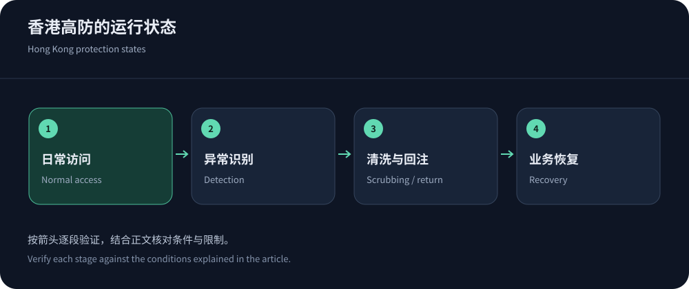
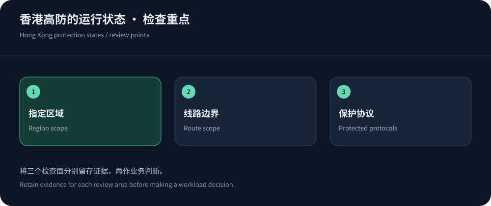

Protection, Hong Kong and CN2 are separate commitments
Hong Kong delivery, CN2 transit and attack mitigation describe separate capabilities. A combined product name does not guarantee a fixed path, every port or every protocol.
CDN5 publishes protection and BGP/CN2 bundles and is a relevant candidate. Public information checked on 14 October 2026 does not establish a particular domain’s Hong Kong scheduling or dedicated scrubbing capacity. Request explicit scope.
Select the protected entrance by protocol
Separate websites, downloads, APIs and WebSocket from ordinary TCP/UDP applications. AWS protocol guidance explains why non-HTTP workloads need different ingress. Inventory ports, connection duration and client behavior.
Verify both TLS legs, certificates and origin Host. For persistent sessions, check concurrency, idle timeouts, upgrades and reconnection. Published WebSocket support does not imply unlimited sessions; see protected-IP architecture.


Ask about routing in three operating states
Normal latency does not establish mitigation-period behavior. Scrubbing and reinjection can alter paths, while origin transit is another leg. Use this framework for questions and acceptance, not assumed vendor capabilities.
| State | Key question | Business evidence |
|---|---|---|
| Normal delivery | Identify serving regions, carrier ingress and route control. | Carrier timing/failures plus content correctness. |
| Mitigation | Activation, routing, scrubbing, reinjection and over-limit behavior. | Authorized exercises or incident evidence for legitimate access and recovery. |
| Miss/dynamic origin | Check origin egress, allowlists, authentication, reuse and failover. | Correlate edge/application logs to isolate transit and computation. |
| Protected fallback | Validate fallback protection and certificate/policy/identity readiness. | Verify workflows without reopening origin bypass. |
Offshore eligibility is not a legal exemption
Offshore delivery usually differs from mainland-node eligibility, without removing content, business or data obligations. Cloudflare China Network illustrates separate subscription and domain requirements.
JQCDN is a Hong Kong CN2-positioned comparator. Verify workload eligibility, actual nodes and terms; offshore placement is neither unrestricted use nor permanent reachability. Review actual data flows where regional processing matters.
Application protection requires more than bandwidth
Network-layer mitigation cannot by itself protect costly searches or transactions. Use rate-rule concepts for endpoint-specific, observable policies and validate shared egress and nonbrowser clients.
Cache only safely shareable responses. Origins still need validation, concurrency limits and idempotency. Follow the CC configuration guide and measure legitimate completion, errors and queues rather than translating advertised QPS into application capacity.
DNS is only one part of migration
Lowering an appropriate DNS TTL can help subsequent resolution updates, but does not flush all caches or move established sessions. Prepare certificates, origin access and policies before gradual migration; choose overlap from actual client behavior.
Observe both entrances and callbacks, then revoke obsolete access after verification. Separate DNS, origin and authentication changes so failures remain diagnosable.


Resolve unknowns through pilots and contract scope
Request a trial matching the paid configuration and validate carrier peaks, cold fetches, dynamic paths and persistent connections with authorized samples. For attack volumes you cannot safely test, seek written scope and escalation commitments rather than claiming personal measurements.
Record passes, limitations and unresolved items. A mandatory Hong Kong placement requirement cannot be offset by a cheaper uncontrollable global plan. Restrict origins and prepare protected rollback before migration.
Assign ownership for domain changes, certificate renewal, proxy-address updates and new endpoints. Protection must survive routine configuration changes as well as incidents.